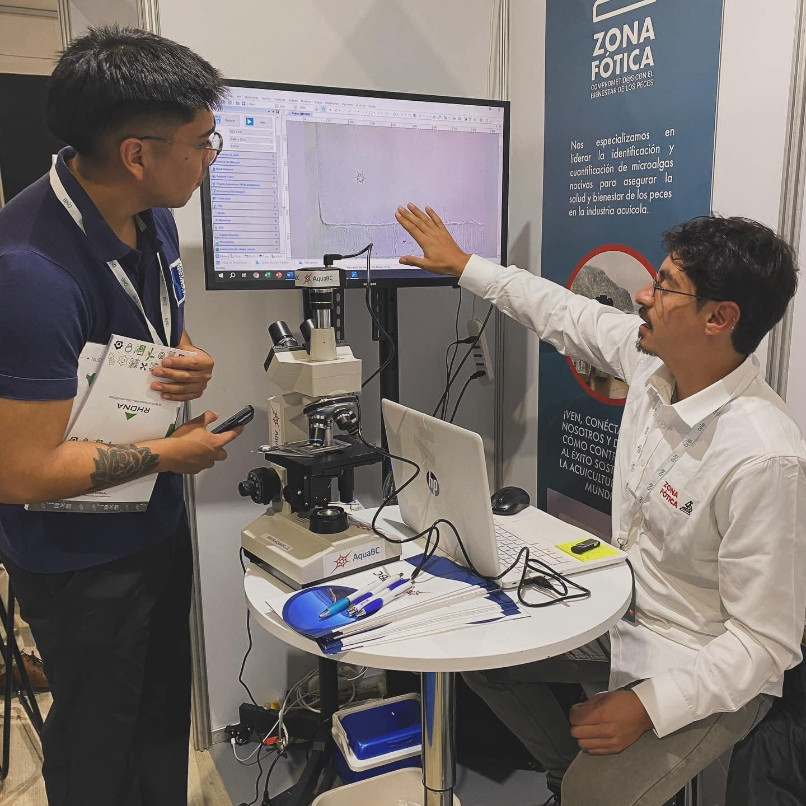
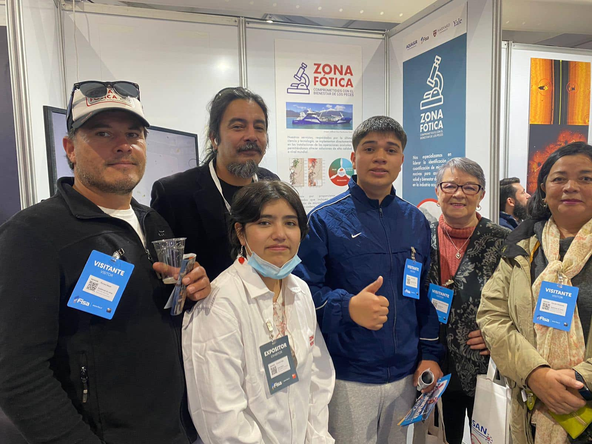

Participación AQUASUR
Zona Fótica agradece a sus colaboradores y visitantes en @aquasurchile Aquasur
La participación de Zona Fótica en la feria Aquasur entre el 19 y 21 de marzo fue un hito destacado para nosotros como consultora, al ser una instancia clave de la acuicultura en el hemisferio donde mostrar nuestro enfoque socioecológico transdisciplinario, abordando los desafíos ambientales costeros mediante una combinación única de ciencia y conocimiento tradicional.
Nuestros servicios se basan en una colaboración genuina con las comunidades costeras, proponiendo planes de seguimiento, muestreo y metodologías para abordar los actuales desafíos de la industria acuícola.
En ese sentido valoramos la respuesta entusiasta de los visitantes en Aquasur, quienes con una amplia gama de intereses, estudiantes y profesiones, demostraron un interés creciente en la problemática de las floraciones algales nocivas (FAN) y los enfoques integrados para la sostenibilidad ambiental.
Esta positiva experiencia en Aquasur fortalece el compromiso de Zona Fótica con la colaboración transdisciplinaria y el desarrollo sostenible en la acuicultura.
Agradecimientos a: Sergio Castillo por los diseños gráficos, Sebastián Cárcamo por la imprenta y elaboración de vestimenta corporativa, Yohny Altamirano Bravo
Aquotek Services por el apoyo logístico, a los investigadores, Dr. David Cassis, Dr. Patricio Diaz, Dr. Javier Paredes, Dr. Jorge Mardones, Dr. Pablo Ibieta y Dr. Alejandro Rojas por su tiempo y asesorías además de la facilitación de insumos para nuestro stand, a Cristian Gutiérrez y Héctor Contreras por el desarrollo de nuestra página web junto a Maricel González por su gestión de las RRSS, la agrupación los Queltehues de Lenca, por su visita y permitirnos desde hace más de un año trabajar en conjunto desde un enfoque transdisciplinario, Alberto Martínez por su apoyo desde la fundación de nuestra consultora y por supuesto al concurso Despega tu Emprendimiento de @fisa_oficial que nos permitió participar de Aquasur 2024.


Zona Fótica
"En un contexto socioecológico, la “zona fótica” se refiere a la capa superficial de los océanos y cuerpos de agua donde la luz solar puede penetrar lo suficiente como para permitir la fotosíntesis. Esta zona es crucial para el ecosistema marino y la acuicultura, ya que es donde se encuentran la mayoría de las plantas y algas que producen oxígeno y productividad primaria que sirve como base de la trama alimentaria. La salud de la zona fótica es fundamental para el equilibrio de los ecosistemas marinos, mantener la biodiversidad y el desarrollo de una acuicultura sustentable.
Las mareas rojas (Floraciones Algales Nocivas (FAN)), por otro lado, son proliferaciones masivas de (micro/macro) algas que pueden ocurrir en la zona fótica. Estas microalgas pueden liberar toxinas nocivas o provocar heridas en las lámelas branquiales por medio de estructuras punzantes que afectan a los organismos marinos (e.g., peces en centros de engorda) y, en algunos casos, pueden ser perjudiciales para la salud humana si se consumen mariscos contaminados. Las mareas rojas (FANs) corresponden a fenómenos recurrentes de la naturaleza que pueden ser causadas por una variedad de factores, incluyendo el aumento de los nutrientes en el agua debido a causas naturales (escorrentía) y/o antrópicas, cambios en las condiciones del agua en periodos estivales y el cambio climático. La gestión adecuada de la zona fótica y la vigilancia de las condiciones del agua son importantes para prevenir y controlar las mareas rojas y proteger la salud de los ecosistemas marinos, el bienestar de los peces (fish welfare) y de las comunidades humanas (human welfare) que dependen de ella."
SOCIECOLOGIA & TRANSDISCIPLINARIEDAD
SOCIECOLOGIA
La gestión adecuada de la zona fótica y la vigilancia de las condiciones del agua son importantes para prevenir y controlar las mareas rojas y proteger la salud de los ecosistemas marinos, el bienestar de los peces (fish welfare) y de las comunidades humanas (human welfare) que dependen de ella.
TRANSDISCIPLINARIEDAD
Corresponde a un enfoque para entender la naturaleza o resolver una problemática desde el conocimiento científico y el conocimiento tradicional. Definir en conjunto un problema, la metodología a utilizar, la representación del problema y las etapas para llegar a una solución o la implementación de diferentes soluciones y/o respuestas.
Nuevo Paradigma
Trabajamos bajo el nuevo paradigma de investigación reproducible y los resultados son reportados en formato HTML, sin necesidad de abrir un procesador de texto como word o power Point para su visualización.
Experiencia
Nos avalan más de 10 años de experiencia en investigación en Floraciones Algales Nocivas a través de participación en proyectos financiados por la Agencia Nacional de Investigación y Desarrollo (ANID) con resultados publicados en revistas científicas.
Investigación reproducible y análisis de datos
¿En qué consiste?
Reproducibilidad significa que los datos y el código de investigación están disponibles para que otros sean capaces de obtener los mismos resultados alcanzados en sus trabajos. Este concepto está íntimamente relacionado con el de replicabilidad, el acto de repetir una metodología científica con el objetivo de alcanzar conclusiones similares. Estos conceptos son elementos centrales de la investigación empírica.
Servicios
Identificación y cuantificación de especies de microalgas nocivas para salmónidos en centros de engorda y/o en el track de navegación vía wellboat.


Estamos comprometidos con la excelencia, la innovación y la sostenibilidad, contribuyendo al éxito continuo de la industria acuícola a nivel global.
Evaluación de la efectividad de cortinas de microburbujas contra Floraciones Algales Nocivas (FAN).
<

Estamos comprometidos con la excelencia, la innovación y la sostenibilidad, contribuyendo al éxito continuo de la industria acuícola a nivel global.
Evaluación y cuantificación del bienestar de los peces (fish welfare) en puntos críticos de la cadena de valor de la salmonicultura.

Estamos comprometidos con la excelencia, la innovación y la sostenibilidad, contribuyendo al éxito continuo de la industria acuícola a nivel global.
Evaluación y estimación de la calidad de materia prima próxima a cosecha, en términos de degradación por madurez, heridas y ectoparásitos.

Estamos comprometidos con la excelencia, la innovación y la sostenibilidad, contribuyendo al éxito continuo de la industria acuícola a nivel global.
Talleres de capacitación con cultivos vivos para identificar especies que producen FAN y capacitación en bienestar de peces (fish welfare) generando un aprendizaje significativo.
 y Heterosigma akashiwo (aisladas de FAN 2021).jpeg)


Estamos comprometidos con la excelencia, la innovación y la sostenibilidad, contribuyendo al éxito continuo de la industria acuícola a nivel global.
Además, ofrecemos un servicio innovador de identificación remota de especies generadoras de FAN, utilizando tecnología avanzada para el monitoreo a distancia.
Estamos comprometidos con la excelencia, la innovación y la sostenibilidad, contribuyendo al éxito continuo de la industria acuícola a nivel global.
Por otra parte tenemos un amplio portafolios de consultorías y estudios, asesorando distintos puntos de la cadena de valor de la salmonicultura.

Estamos comprometidos con la excelencia, la innovación y la sostenibilidad, contribuyendo al éxito continuo de la industria acuícola a nivel global.
Resultados bajo el paradigma de la investigación reproducible para la toma de decisiones basadas en datos.
Nos avalan más de 10 años de experiencia en investigación en Floraciones Algales Nocivas a través de participación en proyectos financiados por la Agencia Nacional de Investigación y Desarrollo (ANID) con resultados publicados en revistas científicas.
Principios


Nosotros
Visión
Nuestra visión en Zona Fótica es forjar un camino donde la coexistencia armoniosa entre la acuicultura y el ambiente sea el rumbo. Buscamos ser reconocidos globalmente como líderes en la cogestión responsable de centros de engorda, impulsando prácticas innovadoras y sostenibles que beneficien tanto a la industria como a la biodiversidad marina y sus comunidades costeras en coexistencia, asegurando un legado positivo para las generaciones futuras.
Misión
En Zona Fótica, nos comprometemos a liderar la protección de los organismos hidrobiológicos en centros de engorda a través de servicios especializados de identificación y cuantificación de microalgas nocivas. Buscamos no solo brindar soluciones precisas y eficientes, sino también promover la sostenibilidad ambiental, velando por el bienestar animal y el equilibrio de los ecosistemas acuáticos.
Banco de Imágenes
MICROALGAS DESCRITAS COMO NOCIVAS para
peces en centros de engorda según Mardones & Clément (2016) asociadas a la normativa Res.Ex. N° 0037/2024.
| Microalgas nocivas para salmónidos | Resolución Exenta N°2198/2017. Limite ref. de nocividad (cél/mL) | Mecanismo de nocividad | Concentración para informar diariamente a Sernapesca |
|---|---|---|---|
 Heterosigma
akashiwo
Heterosigma
akashiwo
|
>20 | Ictiotóxica | ≥1 |
 Pseudochattonella verruculosa
Pseudochattonella verruculosa |
>50 | Ictiotóxica | ≥1 |
 Karenia spp
Karenia spp |
>40 | Ictiotóxica | ≥1 |
 Karenia mikimotoi
Karenia mikimotoi |
>40 | Ictiotóxica | ≥1 |
 Karlodinium cf.
australe
Karlodinium cf.
australe
|
>500 | Ictiotóxica | ≥1 |
 Cochlodinium
polykrikoides
Cochlodinium
polykrikoides |
>50 | Ictiotóxica | ≥1 |
 Alexandrium
catenella
Alexandrium
catenella
|
>300 | Ictiotóxica | ≥1 |
 Leptocylindrus
minimus
Leptocylindrus
minimus
|
>2000 | Daño físico | ≥1000 |
 Leptocylindrus
minimus
Leptocylindrus
minimus
|
>2500 | Daño físico | ≥1500 |
 Sundstroemia
setigera (ex
Rhizosolenia aff.
setigera)
Sundstroemia
setigera (ex
Rhizosolenia aff.
setigera)
|
>500 | Daño físico | ≥500 |
 Thalassiosira
pseudonana
Thalassiosira
pseudonana
|
>3000 | Cambio viscosidad del agua | ≥2000 |
 Lepidodinium
chlorophorum
Lepidodinium
chlorophorum |
>2000 | Bajas de oxigeno disuelto | ≥2000 |
×

Colaboradores
Externos
Patricio Diaz
Lineas de investigación
FAN. Dinámica de biotoxinas. Oceanografía costera